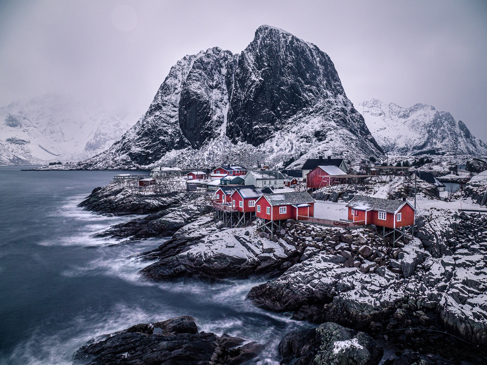

两晚，住近机场
2/4晚住EVE附近，迎接次日06:00航班；2/10晚回Keflavík。确认清晨还车和酒店接驳，不把赶飞机变成雪夜长途。
THE NORDIC WINTER · 春节旅行
Stockholm / Lofoten / Iceland
从斯德哥尔摩的老城，走向罗弗敦的雪山海岸，
再到冰岛的瀑布、黑沙滩与冰川。

* 旅行段天数含部分转场与机动时间；机票为已选方案价格，住宿、租车及活动费用仍为估算。
¥6,842国际主票已含去回程；另加ARN–EVE ¥877、EVE–KEF ¥1,456。随身和托运行李均按需要筛选，确切公斤数及行李直挂以出票信息为准。
沿着地图，把14天慢慢展开。
虚线表示行程顺序，不作驾驶导航。住宿点为建议区域，具体房源待选。
03 / THE BUDGET
按4人分摊车辆与住宿，正常舒适、部分自己做饭。人数还未确定，以下是每人的全程预期。
¥25,000可以作为控制目标；机票已包含在内。
含12晚住宿、一次冰川/冰洞与一次温泉的活动预留。酒店和租车尚未询定；购物、新购装备、单人单住差额及重大滞留不含在内。6人如用两车，人均车辆成本会高于4人或8人。
2/4晚住EVE附近，迎接次日06:00航班；2/10晚回Keflavík。确认清晨还车和酒店接驳，不把赶飞机变成雪夜长途。
2/10留作返西机动日。风雪严重时减景点、早返程，冰河湖和冰洞不必硬赶。
冰岛实时出行提醒 ↗两段都在机场取还车。确认冬胎、车险、驾驶材料和行李空间；4人一车、6–8人两车先作预算，再按实际车型调整。
多人优先有厨房的Airbnb、Cabin或Rorbu。Reine / Hamnøy可升级一晚景观住宿，城市与机场转场夜优先便利。
优先一次专业带队冰川 / 冰洞；Blue Lagoon与Sky Lagoon二选一。海鹰和骑马看天气、精力再定，不和满日行程硬叠加。
黑沙滩遵守现场海浪警戒，停车拍照用正规停车处。自然景点也可能收停车费；极光随缘，安全第一。
罗弗敦冬季旅行提示 ↗